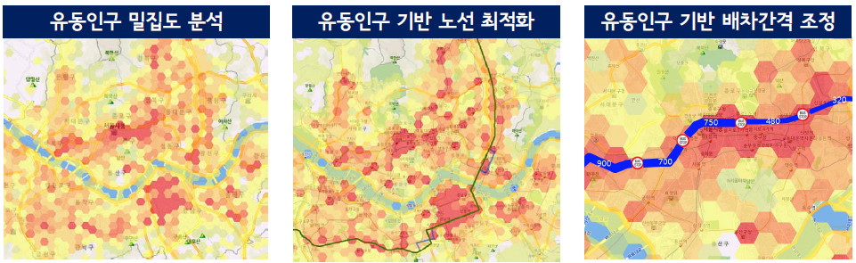
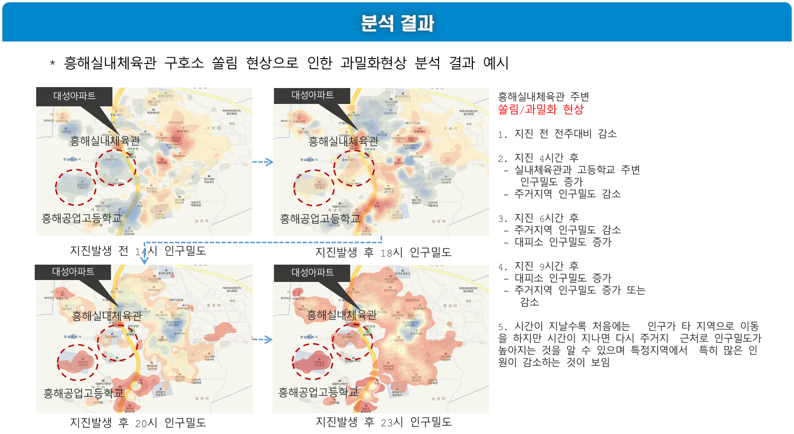
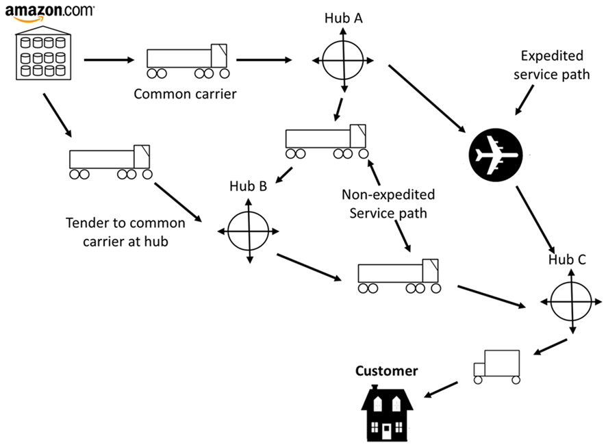

빅데이터 분석사례
다양한 분야에서 사용되는 빅데이터 분석사례에 대해 소개합니다.
 다양한 분석사례들
다양한 분석사례들


- KT의 통화량 통계 데이터와 시가 보유한 교통 데이터를 융합 분석
- 지역을 1252개 구역으로 나눠 자정부터 5시까지 수집된 약 30억건의 KT통화량 데이터에 대한 유동인구 밀집도 분석과 시각화 작업 수행
- 데이터 분석 과정에서 빅데이터 플랫폼을 활용
- 현재 자정부터 오전 5시 사이 8개 노선의 심야버스가 운행 중
- 2017년 포항지진 시, 지진 대응 체계가 미흡하다고 판단
- 지진 발생 직후 국민행동분석 및 이동 패턴분석을 통해 개선된 지진 대응 행동 요령을 제공하고 데이터 기반의 최적 대피소 위치와 규모를 산출하는 등의 지진대응체계 개선하고자 함

- 지역별 이동패턴,교통병목구간 및 지진 피해지역을 공간데이터 표준으로 제작하여 시각화 정보 활용
- 대피소/구호소 별 위치 및 규모 산정 위한 정책수립 참고

- 아래와 같은 데이터를 바탕으로 넷플릭스의 추천 시스템이 작동하여 시청자가 영상을 시청한 후 뭘 보고 싶은지 예측하여 제시한다.
- 시청자가 언제 멈추고, 뒤로 돌려보는지, 앞으로 돌려보는지
- 보는 날짜, 시간대, 시청하는 곳
- 브라우징, 스크롤 패턴


- 빅데이터를 가장 적극적이고, 성공적으로 활용하는 기업
- 경쟁 업체의 가격, 주문 내역, 예상 이익률, 웹 사이트에서의 활동 등 다양한 데이터를 수집해 가격을 10분마다 최적화
- 빅데이터를 활용하여 효율적인 재고 관리시스템 구축
- 소비자의 구매 기록, 쇼핑카트에 담은 물건 등의 개인 데이터를 분석해 대중적이지 않은 물건도 판매